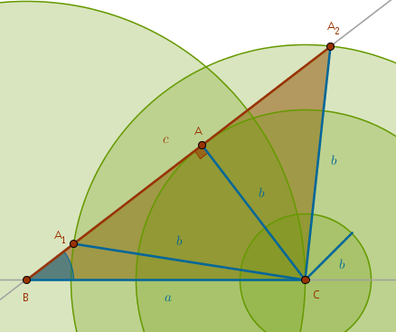
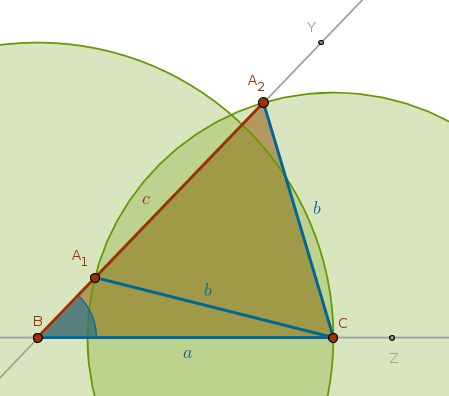

Given
\(a\), \(b\), \(\angle B\) - two sides and the non-included angle
Analysis
We can locate two vertexes of the triangle, \(B\) and \(C\), by cutting the given side \(a\) on an arbitrary straight line. We can then construct the given angle \(B\) at the vertex \(B\). That side of the given angle, opposite to \(a\), is where the remaining vertex must be.
In an attempt to locate the remaining vertex \(A\) by constructing a \(Cir(C, b)\) we observe that three outcomes are possible:
1) \(Cir(C, b)\) may intersect the side of the given angle \(B\) opposite to \(a\) at two points, \(A_1\) and \(A_2\), yielding two triangles, \(\triangle A_1BC\) and \(\triangle A_2BC\)
2) \(Cir(C, b)\) may touch the side of the given angle \(B\) opposite to \(a\) at one point, \(A\), yielding one right triangle \(ABC\)
3) \(Cir(C, b)\) may not even reach the side of the given angle \(B\) opposite to \(a\) at all, in which case a triangle construction is impossible:
From the right triangle \(BAC\) it follows that if:
$$\sin A < \frac {b}{a}$$then it is possible to construct two triangles.
If:
$$\sin A = \frac {b}{a}$$then it is possible to construct one (right) triangle.
If:
$$\sin A > \frac {b}{a}$$then a triangle construction is impossible.
As a side effect of this construction we see why "side, side, angle" criteria can not be used as a triangles' congruence test - because even when a triangle construction is possible it is still impossible to guarantee a construction of a unique triangle with the given objects.
Construction Outline
Construct the given side \(a\) at the vertexes \(C\) and \(B\). Construct the given angle \(B\) with the vertex at the point \(B\). Construct a \(Cir(C, b)\). That circle may conditionally intersect the side of the given angle \(C\) opposite to \(a\), it may touch it or it may not reach it. The intersection locates two vertexes of two possible triangles. The single point of tangency locates one vertex of one possible (right) triangle
Sample Construction
Below is a sample construction of two triangles when:
$$\sin A < \frac {b}{a}$$  $$B, Z$$ $$Ln(B, Z)$$ $$Cir(B, a)$$ $$Cir(B, a) \; \cap \; Ln(B, Z) = C \colon \quad BC = a$$ $$Y \colon \quad \angle YBC = \angle B$$ $$Ln(B, Y)$$ $$Cir(C, b)$$ $$Cir(C, b) \; \cap \; Ln(B, Y) = A_1, A_2 \colon \quad CA_1 = CA_2 = b$$ $$Ln(C, A_1)$$ $$Ln(C, A_2)$$ $$\triangle A_1BC$$ $$\triangle A_2BC$$\(\blacksquare\)